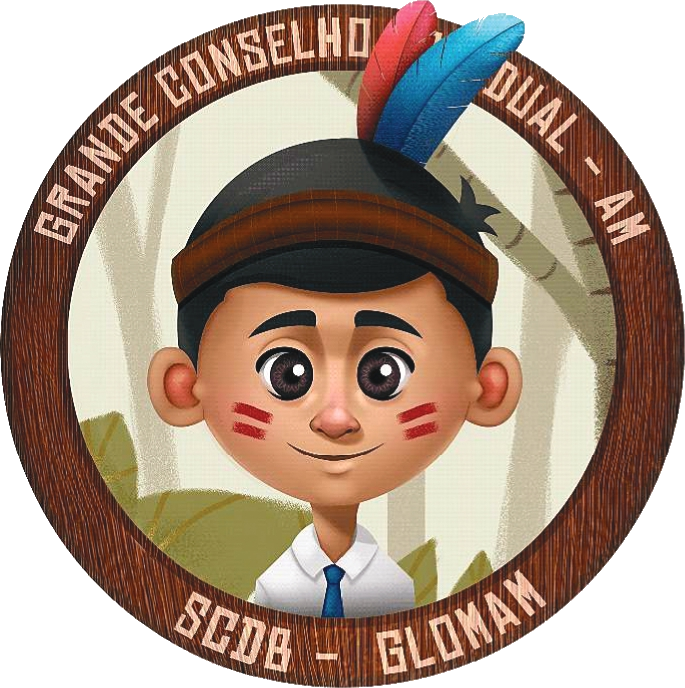
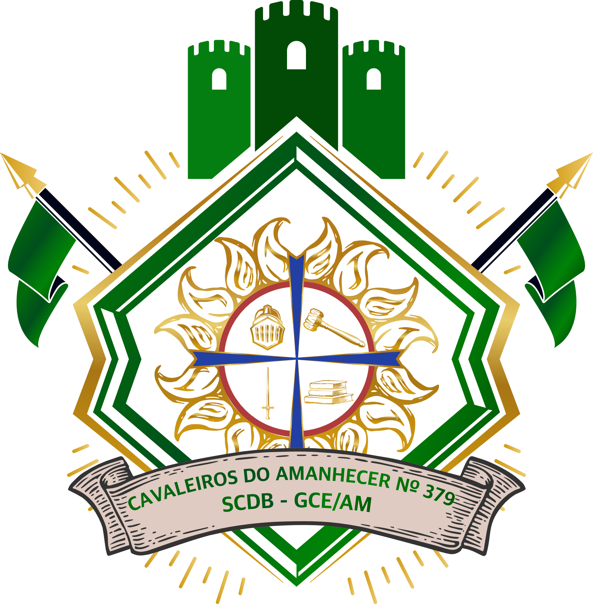
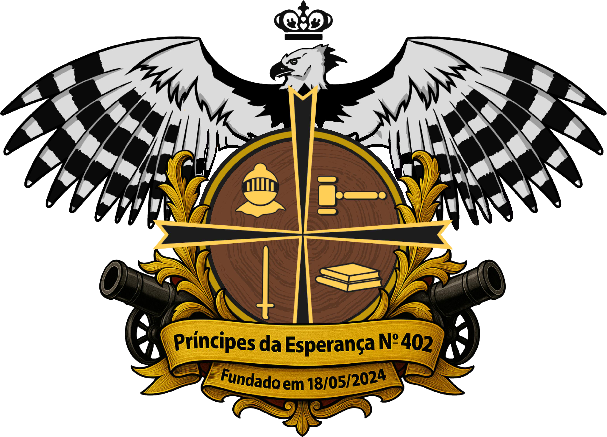

A "Ordem dos Escudeiros" é uma organização afiliada da Ordem DeMolay para jovens do sexo masculino de 07 anos a 11 anos completos.
A unidade da "Ordem dos Escudeiros" denomina-se "Castelo". Um Castelo da Ordem dos Escudeiros é patrocinado por um Capítulo regular da Ordem DeMolay e é instituído por, no mínimo, 10 (dez) membros.
As reuniões de um Castelo devem durar, no máximo, 1 hora e, embora sejam secretas, podem contar com os pais dos escudeiros, além dos DeMolays e maçons.
A vestimenta dos Escudeiros é a mesma adotada para os DeMolays, com exceção da gravata, que será Azul Royal.
Um DeMolay maior de 18 anos deverá ser eleito pelo corpo patrocinador para servir como Preceptor do Castelo pelo mandato de 1 ano. Um Maçom, membro do Conselho Consultivo, deverá ser escolhido pelo Conselho para servir como Consultor do Castelo.
Castelos de Escudeiros do Amazonas
 |
Castelo de Escudeiro: Guerreiros do Amazonas nº. 80
Capítulo DeMolay Patrocinador: Ajuricaba/Amazonas nº. 263 Data de Fundação: 13/02/2016 Data de Instalação: 19/03/2016 Primeiro Mestre Escudeiro: Sem Informação Atual Mestre Escudeiro: Sem Informação Atual Mandato: Jan-Jun/2026 Atual Preceptor: Sem Informação |
| Castelo de Escudeiro: Rosa dos Ventos nº. 149
Capítulo DeMolay Patrocinador: Filhos das Águas nº. 926 Data de Fundação: 12/10/2019 Data de Instalação: 12/10/2019 Primeiro Mestre Escudeiro: Sem Informação Atual Mestre Escudeiro: Sem Informação Atual Mandato: Jan-Jun/2026 Atual Preceptor: Sem Informação |
|
 |
Castelo de Escudeiro: Cavaleiros do Amanhecer nº. 379
Capítulo DeMolay Patrocinador: Cavaleiros da Verdadeira Luz nº. 1200 Data de Fundação: 15/04/2023 Data de Instalação: 02/09/2023 Primeiro Mestre Escudeiro: Sem Informação Atual Mestre Escudeiro: Sem Informação Atual Mandato: Jan-Jun/2026 Atual Preceptor: Sem Informação |
 |
Castelo de Escudeiro: Príncipes da Esperança nº. 402
Capítulo DeMolay Patrocinador: Unidos na Esperança nº. 29 Data de Fundação: 18/05/2024 Data de Instalação: 29/05/2024 Primeiro Mestre Escudeiro: Sem Informação Atual Mestre Escudeiro: Sem Informação Atual Mandato: Jan-Jun/2026 Atual Preceptor: Sem Informação |